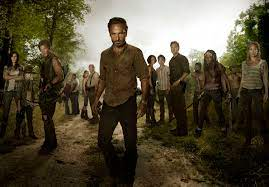
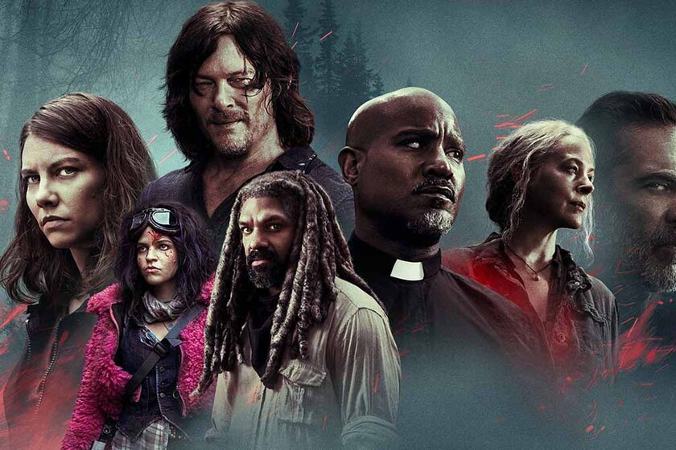

Descripcion
The Walking Dead está basada en un mundo post-apocalíptico repleto de zombis, llamados caminantes, en el que un grupo de supervivientes debe de luchar por su vida frente a la plaga de estos y los peligros de otros grupos de humanos hostiles.

